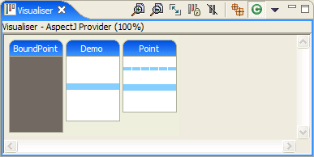
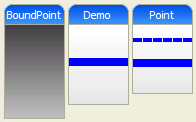
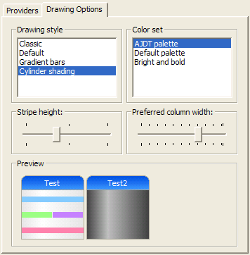
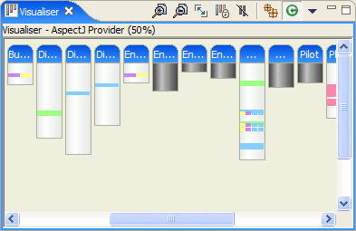
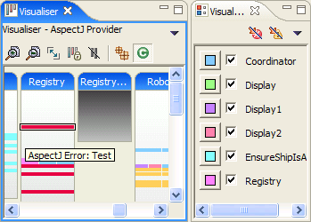
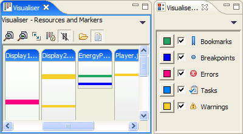

Visualiser rendering improvements
The graphical rendering of the visualiser has been overhauled, to be faster, more flexible, and make more efficient use of image resources so that larger projects can be visualized. Further details of this are available in the following five sections.
New default look
The bars in the visualiser have a new look, with colours and titles more in keeping with the Eclipse 3 style.
Extensible drawing styles and palettes
In addition to the default visualiser appearance, there are several drawing styles to chose from:
- Classic: Preserving the appearance from earlier versions
- Default: Rounded corners and shaded titles
- Gradient bars: As default plus shaded bars
- Cylinder shading: Like gradient bars, but with vertical shading
There are also several different colour palettes available, such as one with bold colours which is good for displaying on projectors. The palette can be chosen separately from the drawing style, and visualiser providers can specify a default palette.
You can even write your own drawing styles and palettes. The
extension points ids are renderers and
palettes respectively, in the
org.eclipse.contribution.visualiser plugin. See
the plugin.xml file for more details, and ask on the developers
mailing list if you have any questions about doing this. Let us
know if you create any good extensions that you'd like to
contribute to a future release!
Improved preferences page
The various drawing options of the visualiser, including the above drawing style and palette options, can be set from the visualiser preferences page, which also previews the selected choices.
Improved selection and keyboard traversal
Support for keyboard navigation within the visualiser has been improved. The tab and shift-tab keys can be used to traverse all of the selectable components, which are complete columns, bars within columns (in group mode there is typically more than one bar in a column), and the individual stripes. The arrow keys can also be used to select the nearest selectable component. The view scrolls to show the current selection. The same components can also be selected with the mouse.

Improved scaling
The first two buttons on the visualiser toolbar allow you to zoom in and out (both horizontally and vertically), and the next button scales the bars to fit everything within the view, subject to certain minimum dimensions.
Errors and warnings shown in visualiser
The results of any AspectJ declare error and declare warning statements are now shown as stripes in the visualiser, in colours matching the usual Eclipse colours for errors and warnings. There are toggles on the visualiser menu toolbar to hide these stripes.
Colour memory for AJDT provider
If you change the colour of a stripe in the visualiser, then that setting will be preserved, such that an aspect of that name, in the same project, will continue to use that colour, even across workbench sessions. There is a menu option to reset this colour memory back to the default of the current palette.
New provider for Eclipse markers
A new provider has been added to the visualiser to show the location of Eclipse markers.
